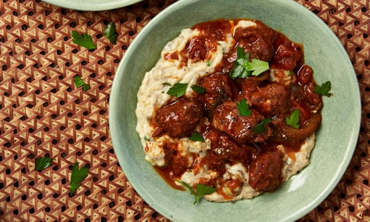

Hünkar begendi

If it’s good enough for an Ottoman sultan, it’s certainly good enough for me.
Mix the lamb in a large bowl with a tablespoon of the flour, a teaspoon of salt and half a teaspoon of pepper. On a high flame, heat two tablespoons of oil in a large, heavy-based casserole for which you have a lid. Sear the lamb, in batches if need be, for four minutes, turning regularly to brown it all over. Transfer to a bowl, turn the heat to medium-high and add the remaining tablespoon of oil. Saute the onions and peppers for five minutes, stirring now and then, until soft, then add the garlic. Stir for a minute, add the tomato paste, cayenne, plum tomatoes, bay, cinnamon and stock, then return the meat to the pot. Bring to a boil, turn down the heat to medium-low, cover and simmer for an hour and a half, until the lamb is very tender.
Line the stove top with a big sheet of tin foil (make holes for the gas rings), then turn on three rings to a medium heat. Put an aubergine on top of each flame and roast for 15-18 minutes, turning occasionally, until the skin is burnt and the flesh soft and smoked. (Alternatively, heat the grill to its highest setting, put the aubergines on a foil-lined tray and grill for about an hour, turning every 20 minutes or so, until deflated and charred all over.) Once the aubergines are cool enough to handle, scrape out the flesh and discard the skin. Roughly chop the flesh and put it in a colander to drain for 30 minutes.
Put a medium saucepan on a medium heat. Add the butter and, once it has melted, stir through the remaining 40g flour and cook for two minutes, until the roux is bubbling and slightly thickened. Slowly pour in the milk, whisking continuously until smooth. Cook over a medium-low heat for four minutes, stirring, until thick. Remove from the heat, and add the nutmeg, cheese, half a teaspoon of salt and a good grind of pepper. Stir in the aubergine pulp and half the parsley, then divide between four shallow bowls and top with the hot lamb and sauce. Sprinkle over the last of the parsley and serve.